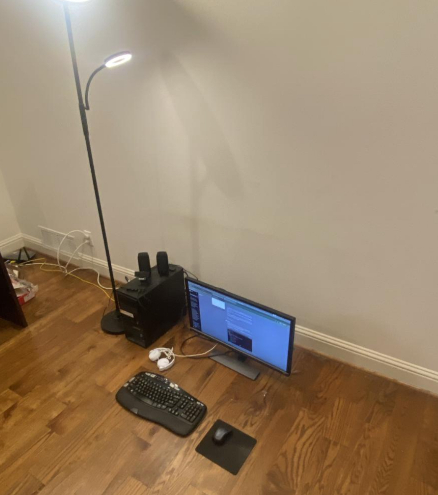
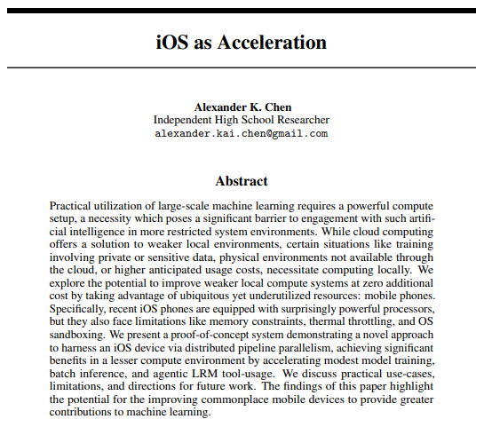

The camera ready version of my paper "iOS as Acceleration" at the Efficient Reasoning NeurIPS 2025 Workshop has been released publicly and can be found at this link: https://openreview.net/forum?id=gYL59Z8KQe Note: the discrepancy between the ResNet-34 acceleration percentage figure in the Program Chair review summary and the CR-paper version is due to a experimental figure that had been incorrectly reported in the initial submission but was corrected post-acceptance. The camera ready version also includes an added thermal throttling experiment and more data figures from new experimentation using an iPhone 16. I am in the process of making an arXiv submission (as I'm a first time author) and will post the link once the paper is on the archive (Here it is! https://arxiv.org/abs/2512.22180). Meanwhile, I wanted to write down some comments about what inspired this project and thoughts I had throughout developing it, and how I intend to continue my research journey.
Project Motivation:
Project Motivation: Before starting this project, I had practically zero experience with AI-research (only some toy CNN & chatbot projects), though I had completed a couple of years of SWE and competitive programming. Last summer however, I became more interested in understanding why and how AI actually works, and similar to how I had developed my general C.S. skills I started reading deeper and more complex papers, blogs, forum chains, etc. I would say the paper that inspired the first thought connected to my iOS project was De-DLOC (https://github.com/yandex-research/DeDLOC) - a milestone distributed training paper which had performed incredible volunteer internet training experiments using consumer desktops. I was really drawn to the idea of collaborative computing as a solution for making ML more accessible, especially as I personally was severely limited in terms of hardware I could use for local ML experimentation.

The engineer within me also was greatly interested in the cross-device parallelism papers, as I saw they might be able to open the doors for me to engage with more powerful AI locally. As the only other device I had was an iPhone 11 Pro (the MacBook mentioned in the paper was my mother's work computer, the iPhone 16 we received from an internet provider deal), I wondered how much benefit I could squeeze out of it if I could somehow hook it up to my desktop, almost like an external GPU. Thus, the "iOS as Acceleration" project began. You can find more details about what I did in my paper linked at the top. Writing a paper myself was a new (scary at first) yet entertaining and very beneficial experience for me.
Future Work:
The main end goal I had planned for this project was to enable any user to "plug-and-play" their mobile phone into a computer and make everything go faster, with a stretch goal being an over-the-internet phone-based network (like a phone De-DLOC). Right now, the project is in the proof-of-concept stage, but I can see impacts being made in the future, especially in less privileged, resource-constrained environments e.g. local classrooms.
There are still quite a few steps that need to be taken to reach the final goals (see future work suggestions in the paper), but I have a growing interest for other research questions, specifically regarding neuro-symbolic reasoning models and what it means for machines to "think". This project has been a very fruitful introductory experience to the AI research world for me, and I will still continue development on the idea, but it most likely won't be my primary focus moving forward. Though the spirit of the project remains with me: I want to continue exploring novel, unseen approaches to the problems we face.
Again, a big thanks to workshop organizers and reviewers for hosting the event and providing valuable feedback, and I'm looking forward to engaging with the community in San Diego!
